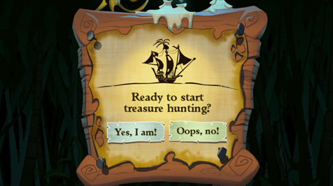

7 |
Het spel starten |
 |
| Selecteer het spel in je Wii-menu. Het scherm met het voorbeeldkanaal verschijnt. Om de aflevering te starten, richt je de aanwijzer op Beginnen en druk je op de A-knop. Zo kom je in het hoofdmenu.
 In het hoofdmenu heb je de volgende opties:
 Richt op New Game en druk op de A-knop. Wanneer het je gevraagd wordt, selecteer je met de A-knop Yes, I am! om het avontuur te laten beginnen of Oops, no! als je terug wilt naar het hoofdmenu.
 Richt op Save & Load en druk op de A-knop. Het is belangrijk je vorderingen op te slaan. Op belangrijke punten in het spel wordt je spel automatisch opgeslagen. Ieder automatisch opgeslagen spel vervangt het daarvoor opgeslagen spel, dus als je bepaalde gedeelten van het spel opnieuw wilt kunnen spelen, moet je je spel op andere plekken opslaan. Om je spel handmatig op te slaan of te laden, ga je naar het menu Save & Load, druk je op de A-knop om met de pijlen naar links of rechts te scrollen, selecteer je een genummerde plek en druk je met de A-knop op Save Game of Load Game. Selecteer Back of druk op de B-knop om terug te gaan naar het hoofdmenu.
Richt op Settings en druk op de A-knop. In dit scherm kun je de instellingen voor het spel aanpassen. Je kunt kiezen uit Gameplay Settings en Audio Settings door op de pijltjes te richten en op de A-knop te drukken. Selecteer Back of druk op de B-knop om terug te gaan naar het hoofdmenu.

 Richt op de pijltjes en druk op de A-knop om de geluidsinstellingen te veranderen.
Let op: In sommige puzzels worden geluidseffecten gebruikt, dus het volledig uitzetten van de geluiden is niet aan te raden.
 Richt op Quit en druk op de A-knop. Als het je gevraagd wordt, druk je met de A-knop op Yes, quit! of terug te keren naar het Wii-menu of No, don't! als je terug wilt naar het hoofdmenu.

Overal op Flotsam Island liggen tikigoden begraven. Ze bewaken ieder een belangrijke schat. Volg de kaart om deze tiki's te vinden. Richt op Treasure Hunting en druk op de A-knop. Als erom gevraagd wordt, maak je je keuze en druk je met de A-knop op Yes, I am! om te beginnen met schatzoeken of op Oops, no! als je terug wilt naar het hoofdmenu. |
 |
 |
 |